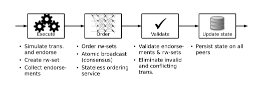
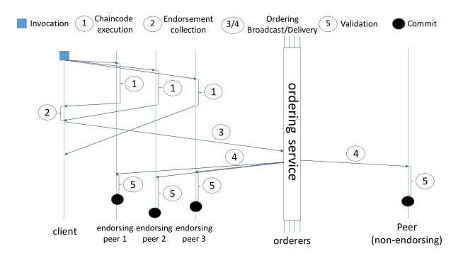

参考文献：Hyperledger Fabric: A Distributed Operation System for Permissioned Blockchains
架构
整体结构
Fabric是一个许可区块链的分布式操作系统，可以执行多种编程语言编写的分布式应用。它能够在一个只能追加的数据结构中安全地跟踪执行历史，并且没有内置的加密账本。
Fabric使用了“执行-order-验证”的区块链架构，而没有遵顼标准的“order-执行”设计。其整体的分布式应用可以分为两个部分
智能合约，称为链码 (Chaincode) ，是一段实现了应用逻辑的程序代码，并在执行过程中运行。链码是Fabric分布式应用的核心部分，可能会被未受信任的开发者修改。有一种特殊的链码被用于管理区块链系统并维护参数，被称为系统链码 (system chaincode)
背书政策 (endorsement policy) 在验证阶段进行评价。许可政策无法被未受信任的开发者选择或修改。其在区块链中充当一个用于事物验证的静态库，且只能通过链码进行参数化。只有指定的管理员有权限使用系统管理功能修改。
“执行-排序-验证”结构示意图：

一个客户端向背书政策指定的peer节点(peers)发送交易。这个交易被特殊的peer节点执行并且记录输出信息，这一步骤被称为背书。执行完成后，交易进入了排序(ordering)阶段，在这一个阶段中，使用了一种可插入的共识协议来产生一个完成排序的已背书交易的序列，并按区块分组。这些交易被广播到所有的节点。这个序列的顺序由输出和状态的依赖性决定。在验证阶段，每个peer节点都需要根据背书政策和执行的一致性对已背书交易的状态变化进行验证。所有peer节点都已相同的顺序进行验证，因此结果具有确定性。
Fabric网络支持多个区块链链接到同一个排序服务上。每个区块链被称为一个通道(Channel)，可以有不同的peer节点作为其成员。这些通道可以被用来分离不同的区块链之间的状态，但每个通道的共识并不一致，并且通道中的交易顺序是相互分开的。认为所有排序都是可信的部署，可以通过通道访问控制来实现对节点的控制。
其中的节点可分为：客户端、peer节点（其中一部分为背书节点）、排序服务节点(OSN, Ordering Service Nodes or orderers)
交易的三个阶段

执行阶段
在执行阶段，客户端签署并发送一个交易提案给一个或多个背书节点来执行（根据背书政策，每个chaincode都有特定的一组背书节点）。一个交易提案包含了提交客户端的身份（根据MSP），交易的载荷、参数、链码标识符、每个客户端只能使用一次的nonce（随机值或计数器），以及客户端标识符和nonce生成的交易标识符。
背书节点会对交易提案进行模拟，在指定的区块链链码上执行操作。模拟操作在背书节点的本地区块链状态中进行模拟，不与其它节点同步，也不会将模拟的结果永久化到帐本中。区块链的状态仍然由节点交易管理器(Peer Transaction Manager)维护。一个链码创建的状态只能限定在该链码上，不能被其他的链码直接访问。需要注意的是，链码只能维护GetState、PutState、DelState操作访问的内容（可能意思是：需要使用这些接口进行访问，不能直接修改，猜测状态权限为private）。给予适当的权限，链码可以调用同一个通道的链码，并访问其状态。
在模拟后，背书节点会产生一个writeset，其中包括模拟产生的状态更新，和一个readset，代表交易提案模拟的版本依赖（模拟时的所有密钥以及对应的版本号）。在模拟结束后，背书节点会以加密的方式签署一份“背书”消息，包括了writeset和readset（包括交易id和背书节点的一些数据），随后以响应的方式发送给客户端。客户端收集背书，直到满足链码的背书政策，开始交易。特别的，这要求政策决定的所有背书节点都返回相同的writeset和readset。然后，客户端将继续创建交易，并传递给排序阶段。
排序阶段
客户端收集到足够的背书后，将会把交易组装起来并发送给排序服务端。整个交易包括了载荷(payload)（包括参数的链码操作）、交易元数据、背书的集合。排序阶段对每个通道的所有提交建立了一个排序。排序服务端会将多个交易分成块，输出包含交易的哈希链序列，以提高广播协议的吞吐量。
broadcast(tx)：客户端调用这个函数来广播交易tx，包含了载荷和签名。B$\leftarrow$deliver(s)：客户端调用这个函数来获取非负序列号s的区块B，$B=([tx_1,tx_2,\ldots,tx_k],h)$，$h$为s-1区块的哈希值。
排序服务确保了一个通道中的交付区块被完全排序，确保安全。
然而，每一个单独的排序实现都允许在客户端请求中保证自己的活跃性与公平性。
由于区块链中包含了大量的节点，但仅有少部分节点实现了排序服务，因此Fabric可以配置使用内置的gossip服务，将排序服务中交付的区块分发给所有的节点。
验证阶段
排序服务会把区块直接分发给各个节点（或通过gossip）。随后，一个新的区块进入验证阶段，包含三个连续步骤：
- 并行执行区块中所有的交易的背书政策评估。评估是验证系统链码(VSCC, validation system chaincode)的任务。VSCC是一个静态库，是区块链配置的一部分，负责根据链码中的背书政策验证背书。如果不满足，这个交易会被标记为无效，并被忽略。
- 对块中的所有交易进行读写冲突检查(read-write conflict check)（版本号比较）。对于每个交易，将会对比其中readset的版本号和节点本地存储的账本当前状态中的版本号，确保版本相同。如果版本不匹配，交易会被标记为无效，并被忽略。
- 最后进行账本的更新阶段，在这个阶段，区块被追加到本地存储的账本中，并且更新区块链的状态。将区块添加到账本时，前两步的检查结果将被持久化以掩码的形式表示区块中的交易有效。这有助于后面进行重建状态。此外，所有的状态更新都是通过将writeset中的键值对写入本地完成的。
信任与故障模型
Fabric可以适应灵活的信任和故障假设。通常情况下，所有的客户端都被认为是潜在的恶意用户或是Byzantine。节点都被归入组织(organization)并且每个组织组成一个信任域(trust domain)。每个节点信任其组织内部的其他节点，而不信任其他组织的节点。排序服务同样认为所有的节点（或客户端）都是潜在的拜占庭。
Fabric网络的完整性依赖于排序服务的一致性。排序服务的信任模型取决于其实现。
在Fabric中，分布式应用可以定义自己的信任假设，通过背书政策来传达，并且独立于排序服务实现的共识的信任假设。
组件
Fabric使用了gRPC架构实现客户端、节点和排序服务之间的通信。
成员身份管理服务（MSP）
成员身份管理服务(MSP, membership service provider)维护了系统中所有节点（客户端、节点、排序服务）的身分，并负责发布节点的凭证，用于认证和授权。节点之间的所有交互都是通过已认证的消息（通常是数字签名）发生的。成员身份管理包括每个节点的组件，可以认证交易、验证交易的完整性、签署并确认背书、验证其他的区块链操作。MSP中还包括了用于密钥管理和节点注册的工具。
MSP是抽象的，可以有不同的实例。Fabric中，默认的MSP实现可以处理基于数字签名的PKI认证方法，并且容纳商业认证机构(CA)。Fabric提供了独立的CA——Fabric-CA。
Fabric允许设置区块链网络的两种模式。在离线模式下，凭证由CA生成，并分发到所有节点。peer节点和排序节点只能在离线模式下注册。对于客户端的注册，Fabric-CA提供了在线模式，向客户端发送加密凭证。MSP的配置必须要确保所有的节点都能识别相同的身份和认证认定为有效（特别是所有的peer节点）。
例如，当多个组织在同一个区块链网络中时，MSP需要能够允许身份的联合。每个组织向自己的成员发放身份，每个peer节点都能识别所有组织的成员。这可以通过多个MSP实例来实现。例如，在每个组织和一个MSP之间建立一个映射。
排序服务
排序服务可管理多个通道，对每个通道，都提供如下三个服务：
- Atomic broadcast，用于对交易进行排序，实现广播和分发
- 重新配置(reconfiguration)通道，成员通过广播一个配置更新事物(configuration update transaction)修改通道。
- （可选择）访问控制(access control)，在这些配置中，排序服务作为可信的实体，限制交易的广播和指定peer节点和客户端的块的接收
排序服务通过系统通道上的生成块进行引导。生成块携带了配置事务(configuration transaction)，定义了排序服务的操作。
当前版本的实现由OSN组成，OSN实现了描述的操作并且通过系统通道通信。实际的atomic broadcast函数由基于ZooKeeper的Kafka实例提供，这个实例提供了可以扩展的发布-订阅消息，在节点崩溃后仍具有强一致性(consistency)。这个实现可以运行在与OSN分离的物理节点上。OSN作为peers和Kafka实例之间的代理。
OSN直接将收到的新交易注入到广播中。OSN将从广播中接收到的交易转换成块。只要满足三个情况之一，块就会被断开。
- 区块包含了交易允许的最大值
- 区块达到最大大小
- 从接收到第一个交易后超过某特定时间
批处理的过程是确定的，因此在所有节点上都会产生相同的区块。考虑到从广播中接收的交易数据流，前两项情况是已经确定的。对于第三个条件，当节点读入块中的第一个交易时，会开启一个计时器。如果计时器超时后，这个区块仍然没有断开，OSN会在通道上广播一个特殊的“到时断开(time-to-cut)”交易，其中记录了需要断开的区块的序列号。另一方面，每个OSN在收到“到时断开”交易后，会根据其给定的序列号，立即切断新的区块。这个交易是原子性的分发给所有连接的OSN，所以区块中都包含相同的交易列表。OSN将最近交付的一系列区块直接持久化到文件系统中，因此可以通过分发回答peer节点来回收区块。
Peer Gossip
将三个阶段分开的好处是在开发的时候可以独立扩展。然而，由于共识算法往往有带宽限制，排序服务的吞吐量被节点的网络容量所限制。共识无法通过增加节点而扩展，反而会让吞吐量降低。然而，由于排序和验证是分开的，在排序阶段后，重要的是如何有效地广播执行阶段的结果，以交给peer节点进行验证。此外，还有如何对新加入的peer节点和长期断开的peer节点进行状态转移。这两个问题就是gossip组件所需要解决的。Fabric gossip利用流行组播(epidemic multicast)来解决这个问题。区块是由排序服务签署的。这意味着一个peer节点在收到所有区块后，可以独立的组装为区块链并验证其完整性。
gossip的通信基于gRPC，利用TLS（传输层安全协议）进行相互识别，使得每一方都可以将TLS凭证与远程peer节点的身份绑定。gossip组件用来维护系统中当前在线的peer节点的成员视图。所有的peer节点通过定期传播成员数据独立建立一个本地视图。此外，一个peer节点可以在网络崩溃或者中断后重新连入成员视图。
Fabric的gossip组件采用了两个阶段进行信息的传播：
- 在push阶段，每个peer节点从成员视图中选择一个随机的活跃邻居集合，并向他们发送信息
- 在pull阶段，每个peer节点定期探测一个随机选择的peer节点集合，并请求缺失的信息
研究表明，同时使用这两种方法可以优化可用带宽并确保所有peer节点有很高的概率接收到所有信息。
为了减少从排序节点向网络中发送的区块的负载，协议同时在peer中选择了一个领导者(elects a leader peer)，代表peer节点从排序服务中pull区块，并启动gossip分发。这个机制对领导者出现故障具有弹性。
分布式账本(Ledger)
账本组件在各个peer节点中维持分布式账本并建立持久性的存储，并实现账本的模拟、验证和更新阶段。整体上由一个区块存储(block store)和一个peer节点交易管理器(peer transaction manager)组成。
区块存储(Ledger Block Store)
账本区块存储持久化交易区块，并以一组仅追加文件的形式实现。由于区块无法被改变，并以一个特定的顺序到达，一个仅追加的结构能够带来最好的性能。此外，区块存储中维护了一些索引(indices)，用来随机访问区块或区块中的交易。
peer交易管理器(Peer Transaction Manager)
peer节点交易管理器(PTM)保持版本键值对处于最新状态。它能为每一个唯一的条目(entry)的key以(key,val, ver)存储一个元组，其中包含了最近存储的值val，和最新的版本号var。版本由区块序列号和区块内的交易序列号组成，因此版本号都是唯一且递增的。PTM使用了本地键值存储来识别版本变量，具体实现使用了LevelDB和Apache CouchDB。
在模拟时，PTM提供了一个稳定的最新状态快照。执行阶段中提到，PTM在readset中为GetState访问的每个条目记录一个元组(key, ver)，在writeset中为交易调用PutState更新的每个条目记录一个元组(key, val)。此外，PTM支持范围查询(range queries)，并计算出查询结果的加密哈希（一组(key, ver)元组），并将查询字符串和哈希添加到readset中。
在验证阶段，PTM依次验证一个区块中的所有交易，检查交易是否与之前的任何交易产生冲突。对于readset中的所有key，如果readset中的版本记录与最新状态的版本不同，PTM就会把这个交易标记为无效。对于范围查找，PTM会重新执行查询并与之前的readset比较哈希值，确保不发生错误的读取。
崩溃处理
账本组件在更新时需要能处理peer节点的崩溃。
在接收到一个新区块后，PTM已经对其进行了验证，并使用了掩码将区块中的交易标记为有效或无效。此时，账本将区块写入账本的区块存储中，刷新到磁盘，随后更新区块存储的索引。随后，PTM将所有有效交易的writeset状态变化应用到本地存储中。最后，计算并持久化一个savepoint的值，表示成功应用区块数量的最大值。从崩溃中恢复时，savepoint值用来从持久化块中恢复索引和最新状态。
链码执行
Chaincode在一个与其余peer节点松散耦合的环境中执行。支持增添新的链码编程语言的插件。目前支持Go、Java和Node。
每个用户级或应用链码都在Docker容器环境中的独立进程中执行，这使得链码和peer节点之间相互隔离，简化了链码的生命周期管理（启动、停止、中止）。链码和peer节点通过gRCP通信。通过松散的耦合关系，peer节点不知道链码具体使用了什么语言实现。
不同于应用链码，系统链码直接在peer节点的进程中运行，可以实现Fabric所需要的特定功能，可以用于用户链码之间的隔离限制过多的情况。
配置和系统链码
Fabric通过通道配置(channel configuration)和系统链码(system chaincodes)进行定制。
Fabric中每个通道都会形成一个逻辑区块链。通道的配置由元数据进行维护，并永久保留在配置区块(configuration blocks)中。每个配置区块都会包含完整的通道配置，并不会包括任何其他的东西。每个区块链都以一个配置区块开始，称之为创世块(genesis block)，用于引导通道。通道的配置包括：
- 参与节点的MSP定义；
- OSN的网络地址；
- 共识实现和配许服务的共享配置，比如大小和超时等设置；
- 管理对排序服务操作（广播和分发）访问的规则；
- 管理如何修改通道配置的各个部分的规则。
通道的配置可以使用通道配置更新事务(channel configuration update transaction)进行更新，其中需要包括对配置进行的修改和一组签名。排序节点通过使用当前的配置验证该签名是否得到授权，来评估此次更新是否有效。然后，排序节点生成一个新的配置区块，嵌入新的配置和配置更新事务。Peer节点接收后，根据当前的配置验证更新是否得到了授权，有效则进行配置更新。
在部署应用链码时，会参考一个认可系统链码（endorsement system chaincode, ESCC）和一个验证系统链码（validation system chaincode, VSCC）。这两个链码的选择使得ESCC输出的背书，可以作为VSCC输入的一部分进行验证。ESCC将一个提案和提案模拟的结果作为输入。如果结果符合要求，则ESCC产生一个包含结果和认可的响应。对于默认的ESCC，这个背书只是peer节点的本地签名身份的签名。VSCC将一个事务作为输入，并输出该事务是否有效。对于默认的VSCC，背书被收集，并根据为链码指定的背书策略进行评估。进一步的系统链码实现其他支持功能，如链码生命周期。
系统链码的核心代码在/fabric/core/common/sysccprovider和/fabric/core/scc下